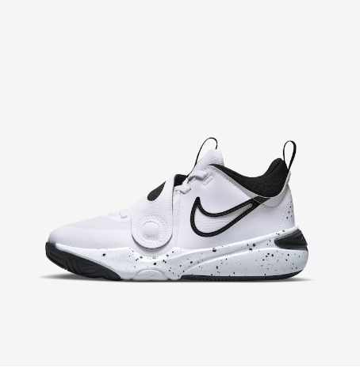
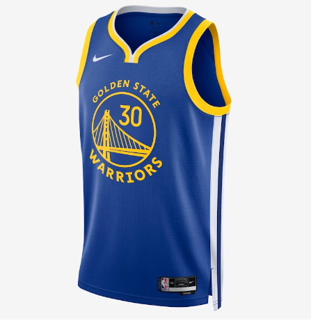

O Basquetebol
O basquetebol é um esporte coletivo criado nos Estados Unidos e praticado em todo o mundo. Seu nome (basketball) está relacionado com dois de seus elementos principais: a cesta (em inglês, basket) e a bola (ball).
Desde sua criação até os dias de hoje, o basquete se desenvolveu muito. Algumas regras mudaram e o basquete é hoje, segundo o site especializado Total Sportek, o segundo esporte mais popular do mundo (atrás apenas do futebol).
Origem do Basquete
O basquete foi inventado nos Estados Unidos da América no início de dezembro de 1891 na Associação Cristã para Moços (YMCA) de Springfield, Massachusetts, pelo professor canadense James Naismith (1861-1940).
O professor buscava um esporte intenso que pudesse ser praticado pelos alunos dentro do ginásio por conta do inverno rigoroso e da chuva no norte dos Estados Unidos. O professor prendeu então dois cestos de pêssego no alto de uma parede e as equipes tinham que encestar a bola. O professor Naismith mediu a altura das cestas e registrou 3,05 metros, essa altura é a mesma até hoje.
Jogadores de Basquete
- Michael Jordan
- Magic Johnson
- Kareem Abdul-Jabbar
- Wilt Chamberlain
- Larry Bird
Produtos
- 
- 